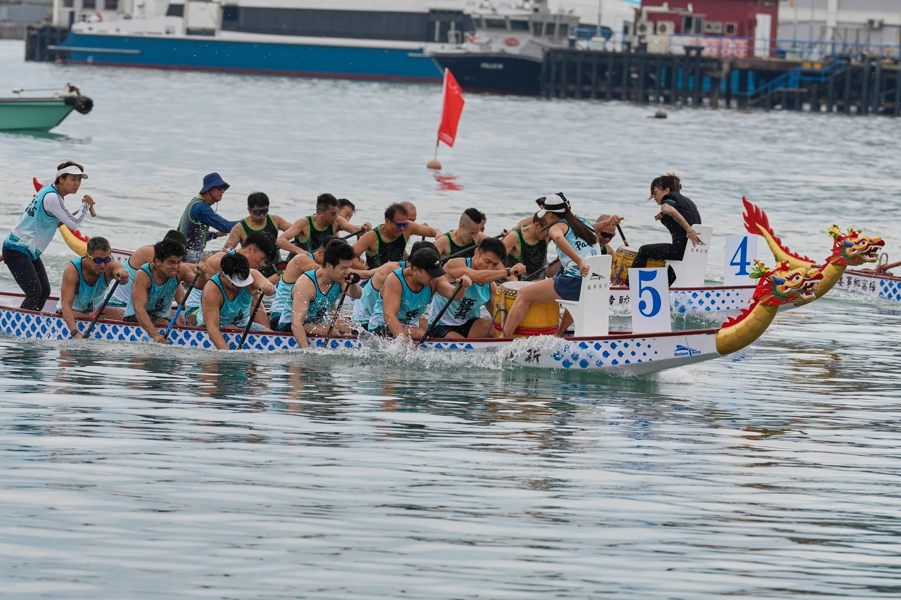

水上的龍，千年的船
龍舟起源可追溯至戰國時代，係端午節為紀念屈原而興起嘅水上競渡。千百年來，由一條木船、一支槳開始，演變成今日凝聚萬千人嘅水上運動。
喺山谷聯，我哋尊重傳統：起龍、請龍、落水、競渡，每一環節都承載住敬意同祝福。扒龍舟唔只係體力嘅考驗，更係心靈同團隊嘅修煉。

鼓聲震天 · 槳影破浪 · 同心協力
大嶼山梅窩三面環山、一面臨海，自古水路通達，村民倚船而生、以舟為伴。端午龍舟，曾係呢片海面上最熱鬧嘅聲音——鑼鼓齊鳴、號子連天，一槳一槳，划出咗幾代人嘅集體記憶。我哋正係喺呢份「怕佢失傳」嘅心情下，重新組起山谷聯龍舟人：唔為攞冠軍，而係想留住呢份屬於海邊人家嘅手藝同情誼，等下一代都仲識得聽鼓聲、執起槳。龍舟唔只係一場比賽，而係我哋點樣記住自己從邊度來。
保存扒龍舟嘅技藝、號子、儀式同記憶，等呢項流傳千年嘅民間文化喺梅窩唔會斷。
開放予所有年齡、背景嘅人參與，由新手體驗日到常規訓練，鼓勵大嶼山乃至全港市民落水試吓。
以一艘龍舟為緣，將街坊、會員、家庭連埋一齊。唔分你我，齊上齊落，共度端午、共赴競渡。
鼓聲震天、槳影破浪，龍舟教識我哋最重要一課：同心協力，先划得過逆境。
龍舟起源可追溯至戰國時代，係端午節為紀念屈原而興起嘅水上競渡。千百年來，由一條木船、一支槳開始，演變成今日凝聚萬千人嘅水上運動。
喺山谷聯，我哋尊重傳統：起龍、請龍、落水、競渡，每一環節都承載住敬意同祝福。扒龍舟唔只係體力嘅考驗，更係心靈同團隊嘅修煉。
一條標準龍舟由龍頭、龍尾、船身、鼓位、舵手位同槳手座位組成。鼓手居中之位，掌控全船節奏；舵手守尾，把握方向；槳手左右對稱，齊心發力。

由梅窩海面嘅一聲鼓響開始，我哋以槳為筆、以海為紙，記錄每一次奮力向前嘅瞬間。練習時嘅汗水、端午嘅鑼鼓、比賽日嘅吶喊——呢啲相片，係我哋共同划過嘅痕跡。願每一位睇到呢度嘅人，都感受到龍舟底下嗰份同心協力嘅力量。